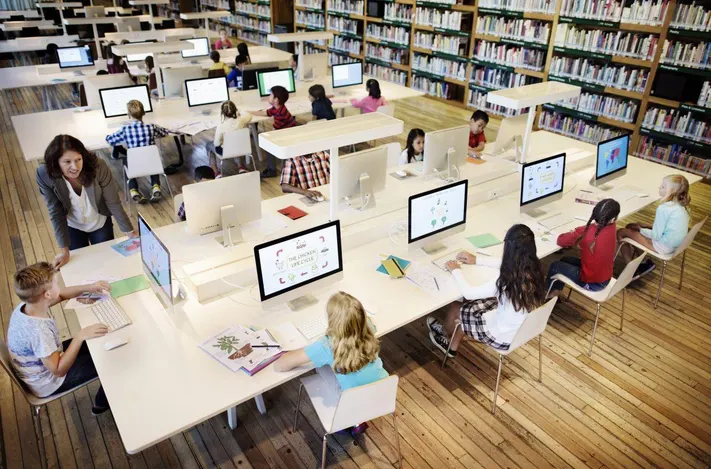
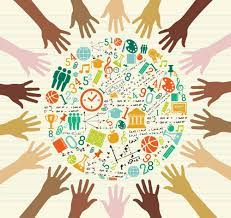

The Fourth Industrial Revolution (4IR) has significantly influenced education systems, bringing about changes in schools and universities. Here are some notable transformations:
Digital Learning and Technology Integration (of course):
Online Education: The rise of digital technologies has led to the widespread adoption of online learning platforms, offering courses and degrees remotely.
Digital Classrooms: Traditional classrooms have been supplemented or replaced by digital classrooms, where interactive whiteboards, tablets, and other technologies enhance the learning experience.

Personalized Learning:
Adaptive Learning Platforms: Technology allows for adaptive learning platforms that tailor educational content to individual student needs, pacing, and learning styles.
Data-driven Instruction: Schools and universities are increasingly using data analytics to assess student performance and customize teaching methods accordingly.
STEM Education Emphasis:
Focus on Science, Technology, Engineering, and Mathematics (STEM): The 4IR has increased the importance of STEM education to prepare students for careers in technology-driven industries.
Coding and Digital Literacy:
Coding as a Skill: Recognizing the importance of coding in the digital age, many educational institutions have incorporated coding and programming into their curricula.
Digital Literacy: Emphasis on digital literacy skills to equip students with the ability to navigate and critically assess information in the digital world.
Project-Based Learning:
Real-world Applications: Project-based learning approaches have gained popularity, emphasizing real-world applications of knowledge and skills rather than rote memorization.

Collaborative Learning:
Online Collaboration Tools: The use of collaborative tools and platforms facilitates teamwork and communication among students, both in physical classrooms and online environments.
Global Education and Cultural Awareness:
International Collaboration: Technology enables schools and universities to collaborate globally, fostering cultural exchange and preparing students for a more interconnected world.
Virtual Exchange Programs: Virtual exchange programs allow students to interact with peers from different parts of the world without physically traveling.

Continuous Learning and Lifelong Education:
Emphasis on Lifelong Learning: The fast-paced changes brought about by the 4IR have highlighted the importance of continuous learning. Educational institutions are adapting by offering lifelong learning opportunities and upskilling programs.
Assessment and Credentialing:
Shift in Assessment Methods: Traditional assessment methods are evolving, with a greater focus on assessing problem-solving skills, critical thinking, and practical application of knowledge.
Alternative Credentials: Recognition of alternative credentials, such as micro-credentials and digital badges, as valid indicators of skills and competencies.
Ethical and Social Implications:
Ethics in Technology: Given the ethical implications of emerging technologies, there is an increased emphasis on incorporating ethical considerations into educational curricula.
Social Responsibility: Education is increasingly focused on instilling a sense of social responsibility and awareness of the societal impact of technological advancements.
These changes reflect the evolving nature of education in response to the challenges and opportunities presented by the Fourth Industrial Revolution. Educational institutions are adapting to ensure that students are equipped with the skills and knowledge needed for success in a rapidly changing, technologically driven world.